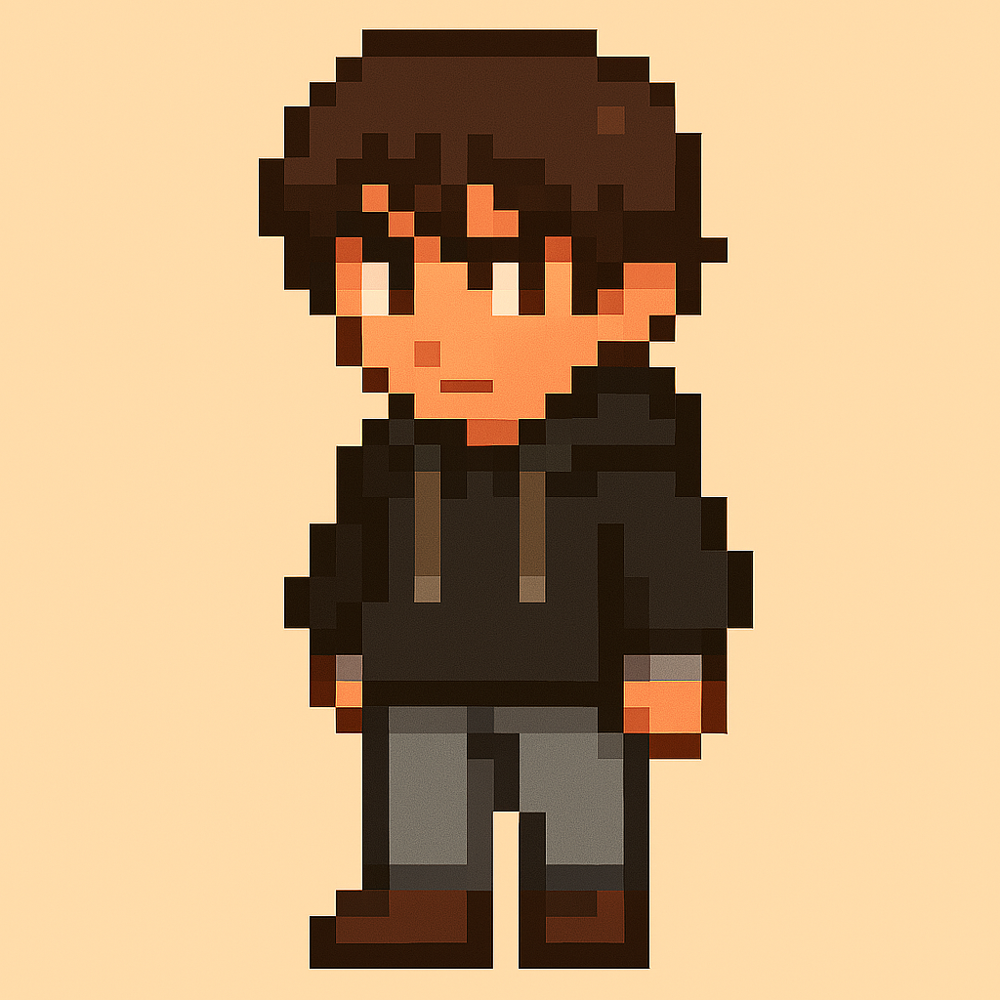

✨ Aventura con Iris ✨

Los personajes de la historia
Ellos son: Iris, Eirian, Keyler, Gus y Nicha
¡Bienvenido al mundo de Iris!
Tu nombre:
Color de cabello:
Azul
Negro
Rojo
Gris
Rubio
Color de ojos:
Verdes
Marrones
Violetas
Negros
Comenzar historia
🔙 Regresar